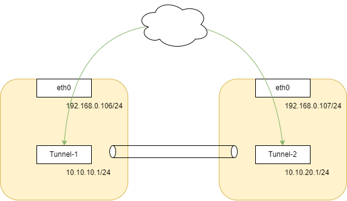
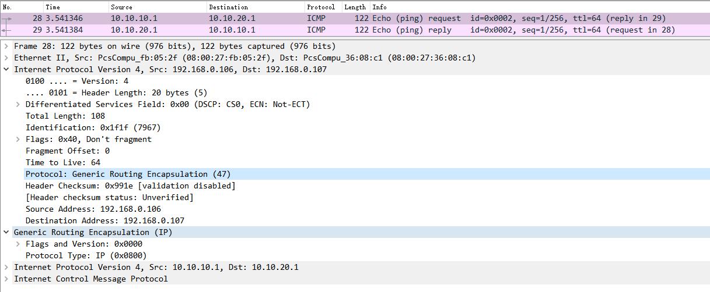

Generic Routing Encapsulation
1. 实验

# PC-1
$ ip tunnel add Tunnel-1 mode gre remote 192.168.0.107 local 192.168.0.106
$ ip addr add 10.10.10.1/24 dev Tunnel-1
$ ip link set Tunnel-1 up
$ route add -net 10.10.20.0/24 gw 10.10.10.1
# PC-2
$ ip tunnel add Tunnel-1 mode gre remote 192.168.0.106 local 192.168.0.107
$ ip addr add 10.10.20.1/24 dev Tunnel-2
$ ip link set Tunnel-2 up
$ route add -net 10.10.10.0/24 gw 10.10.20.1
# PC-1
$ ping 10.10.20.1

2. 源码走读
// gre_demux.c 模块初始化
static const struct net_protocol net_gre_protocol = {
.handler = gre_rcv,
.err_handler = gre_err,
};
static int __init gre_init(void)
{
pr_info("GRE over IPv4 demultiplexor driver\n");
// 1. 注册网络协议 IPPROTO_GRE（47）
if (inet_add_protocol(&net_gre_protocol, IPPROTO_GRE) < 0) {
pr_err("can't add protocol\n");
return -EAGAIN;
}
return 0;
}
// ip_gre.c 模块初始化
static const struct gre_protocol ipgre_protocol = {
.handler = gre_rcv,
.err_handler = gre_err,
};
static int __init ipgre_init(void)
{
int err;
pr_info("GRE over IPv4 tunneling driver\n");
...
// 向gre_proto中注册协议，有两种 GREPROTO_CISCO、GREPROTO_PPTP
err = gre_add_protocol(&ipgre_protocol, GREPROTO_CISCO);
...
}
// 数据包走完LOCAL_IN的hook后，向上层协议栈递送数据包
void ip_protocol_deliver_rcu(struct net *net, struct sk_buff *skb, int protocol)
{
const struct net_protocol *ipprot;
// protocol == 47
ipprot = rcu_dereference(inet_protos[protocol]);
if (ipprot) {
// 这里会回调到 net_gre_protocol.handler >>> gre_rcv (gre_demux.c)
ret = INDIRECT_CALL_2(ipprot->handler, tcp_v4_rcv, udp_rcv, skb);
}
}
// gre_demux.c 中的 gre_rcv
static int gre_rcv(struct sk_buff *skb)
{
const struct gre_protocol *proto;
// ver == GREPROTO_CISCO
ver = skb->data[1]&0x7f;
...
// proto == ipgre_protocol
proto = rcu_dereference(gre_proto[ver]);
// 这里回调 ipgre_protocol.handler >>> gre_rcv (ip_gre.c)
ret = proto->handler(skb);
...
}
// ip_gre.c 中的 gre_rcv
static int gre_rcv(struct sk_buff *skb)
{
// 解析gre头
hdr_len = gre_parse_header(skb, &tpi, &csum_err, htons(ETH_P_IP), 0);
// 如果是ERSPAN协议，就走 erspan_rcv
// ERSPAN (Encapsulated Remote Switch Port Analyzer) 是一种流量镜像协议，通常用于网络流量监控，它在SPAN的基础上扩展了encapsulated remote的特性。
if (unlikely(tpi.proto == htons(ETH_P_ERSPAN) ||
tpi.proto == htons(ETH_P_ERSPAN2))) {
if (erspan_rcv(skb, &tpi, hdr_len) == PACKET_RCVD)
return 0;
goto out;
}
// 普通就走 ipgre_rcv
if (ipgre_rcv(skb, &tpi, hdr_len) == PACKET_RCVD)
return 0;
...
}
ipgre_rcv
__ipgre_rcv
// 查找tunnel
ip_tunnel_lookup
ip_tunnel_rcv
// 设置数据包的设备为tunnel设备
skb->dev = tunnel->dev;
// 走网卡设备收包
gro_cells_receive